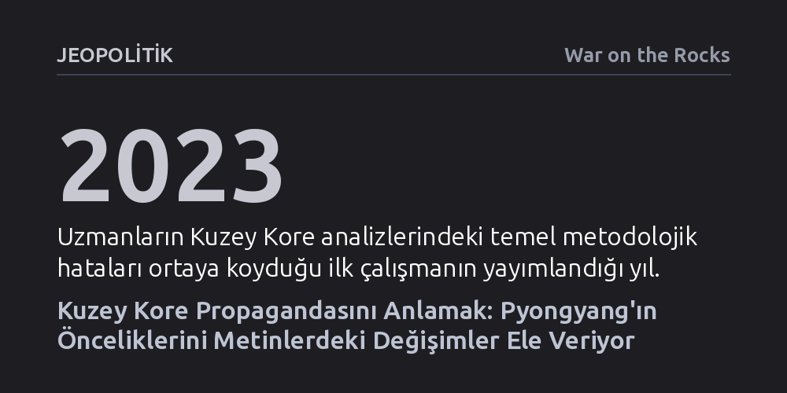

JEOPOLITIK · War on the Rocks · 2026-10-21
Kuzey Kore propagandasını doğru analiz etmenin anahtarı, rejimin söylemindeki yenilikleri ve sapmaları tespit ederek bu değişimlerin arkasındaki gerekçeleri çözmektir. Analistler, Pyongyang'ın değişen stratejik önceliklerini ancak devlet retoriğindeki bu yapısal kırılmaları izleyerek kavrayabilir.
Kuzey Kore'nin kapalı kutu rejimini anlamak için basmakalıp varsayımlar yerine resmi söylemdeki sapmaları ve yenilikleri izleyen metodolojik bir bakış açısı kazandırır.

Kuzey Kore gibi dış dünyaya kapalı rejimleri analiz etmek, uluslararası güvenlik çalışmalarının en zorlu alanlarından biridir. Bilgi akışının son derece kısıtlı olması, uzmanların ve karar vericilerin sıklıkla basmakalıp yargılara ya da durağan varsayımlara sığınmasına yol açar. Pyongyang rejimini ya tamamen öngörülemez bir aktör ya da hiç değişmeyen katı bir ideolojik yapı olarak görmek, yapılan en yaygın analiz hatalarının başında gelir.
Bu yanılgıları aşmak amacıyla bir araya gelen uzmanlar, rejimin resmi yayın organlarını ve iletişim kanallarını basit birer ideolojik gürültü olarak görmekten vazgeçmek gerektiğini savunur. Pyongyang'ın kamuoyuna sunduğu anlatılar, rejim elitlerinin dünyaya ve kendi halkına vermek istediği stratejik mesajların en birincil kayıtlarıdır. Dolayısıyla analizdeki tuzaklardan kaçınmanın ilk adımı, propaganda metinlerine küçümseyici bir önyargıyla değil, titiz birer veri seti olarak yaklaşmaktır.
Propaganda analizi yürütürken her gün tekrarlanan rutin sloganlar ile rejim politikasındaki gerçek kırılmaları birbirinden ayırt etmek hayati bir önem taşır. Uzmanların metodolojisine göre bu çözümlemenin temel kuralı, 'neyin yeni olduğunu tespit etmek ve herhangi bir değişimin ardındaki nedenleri kavramak' olarak özetlenir. Standart metin akışı içinde ilk kez kullanılan bir terim, uzun süredir yinelenen bir sloganın aniden terk edilmesi veya bir diplomatik hedefin farklı bir tonla tarif edilmesi, rejimin politika revizyonlarının habercisidir.
Bu yöntem, analistin elindeki metni tarihsel bir süreklilik çizgisine oturtmasını gerektirir. Bir ifadenin yeni olup olmadığını anlamak, ancak Kuzey Kore'nin geçmiş yıllardaki söylem arşivine hakim olmakla mümkündür. Rejimin kelime seçimlerindeki en ufak bir sapma dahi Pyongyang'ın iç güç dengelerindeki bir sarsıntıya ya da dış dünyayla ilişkilerinde belirlediği yeni bir kırmızı çizgiye işaret eder.
Kuzey Kore yönetimi, küresel jeopolitikteki kutuplaşmaları ve uluslararası sistemin çatlaklarını yakından takip ederek manevra alanını genişletmeye çalışır. Son yıllarda büyük güçler arasındaki rekabetin derinleşmesi, Pyongyang'ın propaganda stratejisinde ve diplomatik tonunda belirgin dönüşümlere yol açmıştır. Analistler, bu yeni dönemde Kuzey Kore'nin söylemlerini takip ederek yönetimin nükleer program, ekonomik baskılar ve müttefiklik ilişkileri konusundaki güncel önceliklerini deşifre etmeyi amaçlar.
Söylemdeki bu kaymalar, rejimin sadece tepkisel bir tutum takınmadığını, aksine değişen küresel dengeleri kendi lehine çevirmek için proaktif bir diplomasi yürüttüğünü gösterir. Sonuç olarak, Kuzey Kore'nin kapalı yapısını anlamanın en güvenilir yolu, devlet retoriğindeki yenilikleri sistemik bir dikkatle izlemek ve bu dönüşümlerin ardındaki stratejik hedefleri doğru okumaktır.